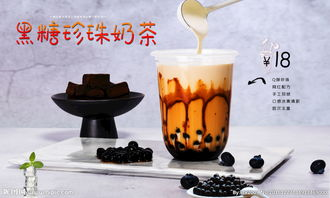
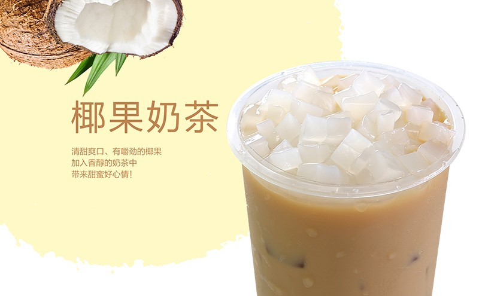
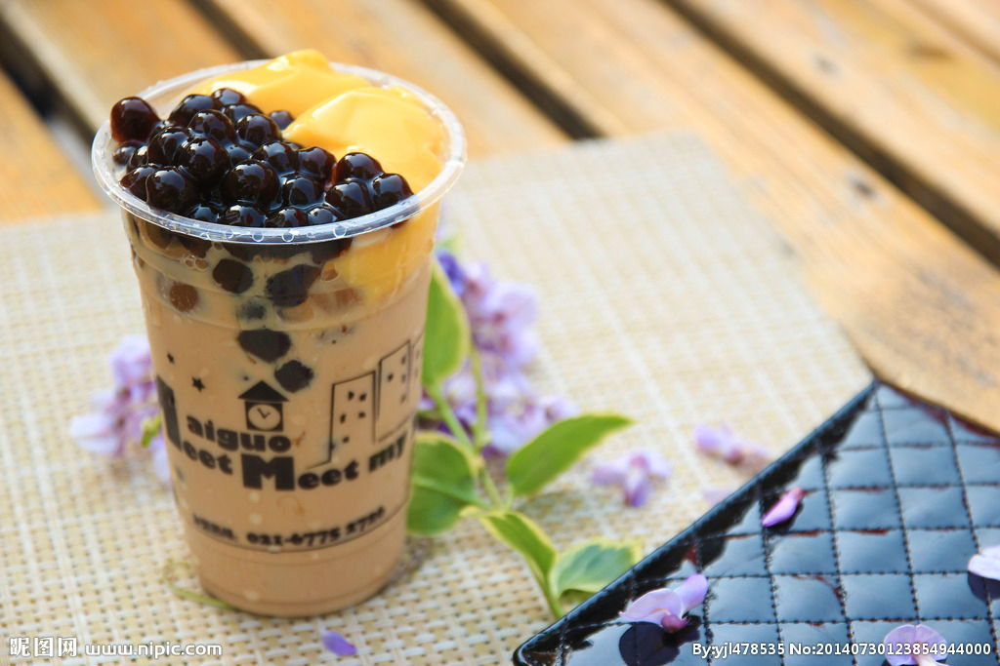
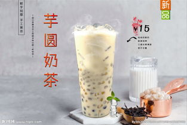

黑糖珍珠奶茶
- 先做黑糖珍珠。小奶锅一口，木薯粉最好倒入碗中备用
- 水烧沸化红糖、加入黑糖桨，红糖充分融化后倒出两勺备用。一次性加入三分之二木薯粉，迅速搅拌,搅拌均匀后再加入剩余三分之一木薯粉。
根据粉的状态适当加甜品调和。趁热搅拌到可以揉面的状态，用擀面杖擀平，切小方块，搓圆。搓的过程中如果太干，可以适当再加一点点糖水调化。
- 煮珍珠奶茶准备的工具。
- 将冷冻的珍珠取出一份，锅中加入300ml水，沸水下珍珠，煮15分钟以上（没速冻过的珍珠煮5分钟就可以了，速冻过的要煮15分钟以上）。
珍珠出锅后果冷水放在冰水中泡一会放凉，捞出放碗里，放入少许凉水，防止都粘在一起，加一勺白糖保持甜度。
- 加上800ml水，水沸腾后加一个红茶包，红茶沸1分钟后去红茶包，加2-3大勺奶粉。过掉未化的奶粉颗粒，出锅加冰块放凉。

椰果奶茶
- 在雪克杯(摇杯)中放入椰香粉、奶粉和果糖，然后用绿茶水冲开，再加入开水或冰块摇匀。
- 杯中舀入椰果，倒上奶茶即可。

珍珠奶茶
- 红茶包和水放入奶锅中用大火煮沸后，转小火煮5分钟，熄火，盖上盖子闷5分钟
- 选择好自己喜爱的茶奶比例。先在杯中倒入淡奶，然后冲入红茶水，冲红茶水时奶锅要与杯子有一定的高度冲下。
这样会产生大量的奶泡。奶茶喝起来才会滑。
- 红糖和热水混合煮沸，趁热加入木薯粉中，一点点的倒入，边倒一边搅拌，一直到成团为止。液体的量会根据不同牌子的木薯粉的吸水性不同而不同。所以不要一次性倒入。
如果倒完液体还发现面团很干，可以继续加入热水，一直到成团为止，根据自己喜爱的大小，揪一点面团。
- 锅中放水烧开后，加入搓好的珍珠，中火煮15-20分钟，具体时间得看珍珠的大小。煮好后熄火，盖住盖子闷15分钟即可。
- 把煮好的珍珠加入冲好的奶茶中，并加入糖搅拌均匀。

芋圆奶茶
- 把红薯切成块放入蒸锅中，盖上锅盖大火蒸15分钟。
- 另起一锅，放入250ml清水，煮到水起小泡泡时，放入10g锡兰红茶，转小火煮，大约煮1分钟，煮至颜色变深，夹出红茶包。
- 放入250ml纯牛奶，保持小火，放入适量白糖，搅拌至白糖融化。煮到锅边起泡泡时即可关火；奶茶就做好了。
- 接下来做芋圆，把煮熟的红薯放入碗中压成泥。按2比1的比例放入木薯淀粉，（红薯2，淀粉1），用手揉，成分揉匀揉成面团。
搓成长条，切成小块。把芋圆放入盘中，加少许红薯淀粉，抹匀防止互相粘连。
- 烧一锅开水，水沸腾后放入芋圆，轻轻搅动防止粘锅，中火煮10分钟。把芋圆煮熟，煮熟后捞出放入冷水中，让芋圆更Q弹。
- 把刚才做好的奶茶倒入装有芋圆的杯子中，一杯芋圆奶茶就做好啦。